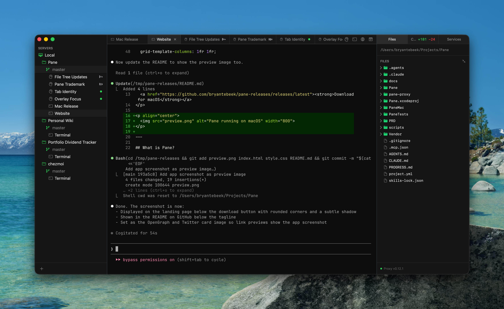
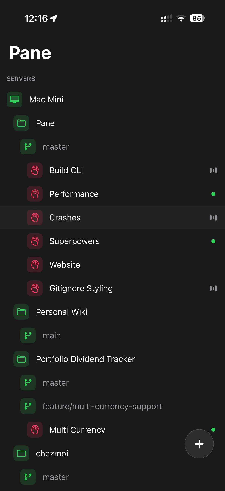
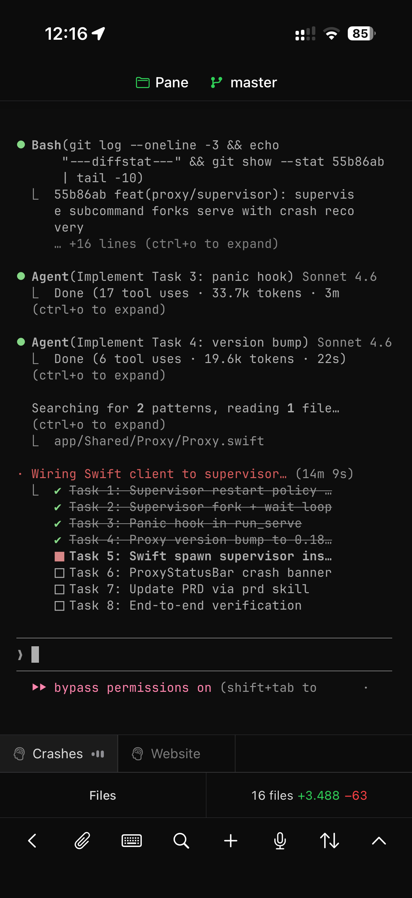

Connect to remote servers over SSH or work on your local Mac. Organize projects into workspaces. Split terminals, run services, browse files, view diffs — all from a single native app. Start on your Mac, pick up on your iPhone or iPad.

Every tab is its own tmux session on the server. Close the app, reopen it tomorrow, switch to your phone — your terminals are exactly where you left them. Rendered with Ghostty's GPU-accelerated Metal engine for full xterm-256color, ligatures, and true color.
pane@dev:~/acme$ git log --oneline -3
a1b2c3d feat: add dashboard API
e4f5g6h fix: session timeout
i7j8k9l refactor: auth middleware
pane@dev:~/acme$ _
pane@dev:~/acme$ npm run dev
> acme@2.1.0 dev
> next dev --turbopack
▲ Next.js 15.3 (Turbopack)
- Local: http://localhost:3000
✓ Ready in 1.2s
Organize your servers into projects and workspaces. Each workspace maps to a git branch — creating a branch workspace automatically creates a git worktree on the server. Your full layout syncs across every connected device.
Pane gives you a terminal. Run any agent CLI you want — Claude Code, Codex CLI, Gemini CLI, Cursor CLI, Amp Code, Aider, OpenCode, or anything else. These are standard command-line programs that run on your server with your own account and subscription. Pane doesn't wrap, intercept, or proxy anything.
What Pane adds on top:
/health endpoint that checks the database connection and returns the service status.
Define your dev servers, workers, and log tailers in a pane.json file at the root of your project. Pane starts them as background tmux sessions on the server and monitors their health. Start, stop, and restart from the sidebar.
{ "name": "acme-app", "services": [ { "name": "Next.js", "command": "npm run dev", "url": "http://localhost:3000", "healthCheck": { "path": "/api/health", "interval": 5 } }, { "name": "Stripe webhook", "command": "stripe listen --forward-to localhost:3000/api/webhook" } ] }
Browse localhost URLs running on your server without setting up port forwarding. Pane routes all traffic through a SOCKS proxy over your SSH connection — the built-in browser sees what the server sees.
Pane connects over SSH to any server, VM, or container with an SSH daemon. There's no agent to install, no cloud account, no telemetry. Pane drops a small Rust proxy onto your server the first time you connect — everything else stays in standard SSH.
If you don't have a remote server, point Pane at your own Mac:
ssh in, Pane worksThe same Ghostty engine and tmux sessions, on iPhone and iPad. Open a terminal on your Mac, pick it up on your phone or tablet. Speech-to-text input, a file browser, and the same project workspace layout you set up on desktop.


Install Pane, configure your projects, learn the shortcuts, and follow what's new in each release.
Open documentation →